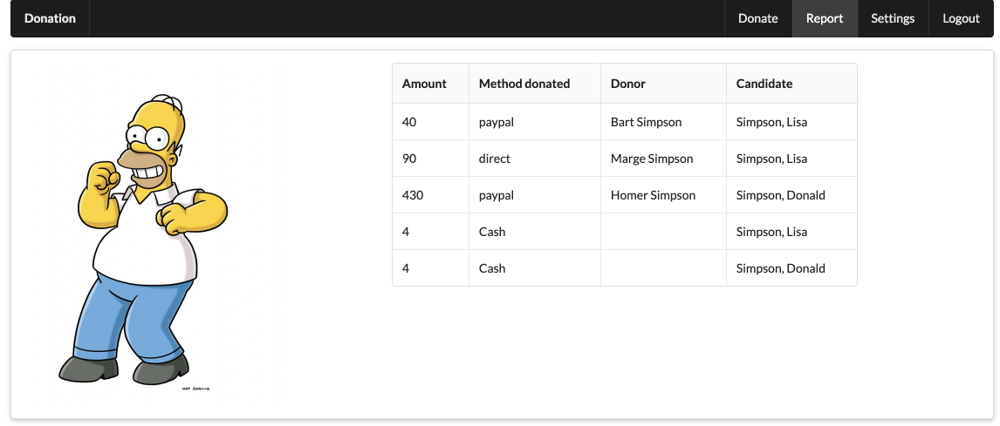

Objectives
Attach the donation-client to the donation-web application.
Solution
Experiment with the Signup feature. For the moment, always return false from DonationService - and make sure this failure is reported on the signup screen.
Soluiton
THe signup view will need a place holder for reporting signup errors:
src/views/signup.html
</form>
<h3>${prompt}</h3>
</div>The Signup ViewModel will then invoke the DonationService.signup method:
src/views/signup.ts
import { inject } from 'aurelia-framework';
import { DonationService } from '../services/donation-service';
@inject(DonationService)
export class Signup {
firstName = 'Marge';
lastName = 'Simpson';
email = 'marge@simpson.com';
password = 'secret';
prompt = '';
constructor(private ds: DonationService) {}
signup(e) {
console.log(`Trying to sign up ${this.email}`);
const success = this.ds.signup(this.firstName, this.lastName, this.email, this.password);
if (!success) {
this.prompt = 'Oops! Try again...';
}
}
}For the moment, we will always return false:
src/services/donation-services.ts
signup(firstName: string, lastName: string, email: string, password: string) {
//this.changeRouter(PLATFORM.moduleName('app'))
return false;
}CORS
Our donation-web application, which we left in Lab09b, provides an API which we can now start to hook up to from the client.
Before we do that, we need one change to the way the server server is initialised:
index.js
const server = Hapi.server({
port: process.env.PORT || 3000,
routes: { cors: true }
});The change above is to enable 'Cross Origin Resource Sharing' (CORS) for all routes. This is required as we are now interacting with the API from an application running in a browser (donation-client), as opposed to just invoking simple unit tests.
With this in place, launch the donation-web application locally.
In the donation-client, we change the base url our http client uses:
src/services/donation-service.ts
httpClient.configure(http => {
http.withBaseUrl('http://localhost:3000');
});This means if we make requests, we will be accessing end points in the web app. So here we will be retrieving all users and donations:
src/services/donation-service.ts
constructor(private httpClient: HttpClient, private ea: EventAggregator, private au: Aurelia, private router: Router) {
httpClient.configure(http => {
http.withBaseUrl('http://localhost:3000');
});
this.getCandidates();
this.getUsers();
}
async getCandidates() {
const response = await this.httpClient.get('/api/candidates');
this.candidates = await response.content;
console.log(this.candidates);
}
async getUsers() {
const response = await this.httpClient.get('/api/users');
const users = await response.content;
users.forEach(user => {
this.users.set(user.email, user);
});
}Check the console (in the browser) to see if they are retrieved successfully. They should be the data we seeded in Mongodb in donation-web.
Candidates
Our local Candidate type matches the donation-service Candidate model - except the candidates returned from the server will have a mongo _id field. We can extend our client Candidate type to include:
src/services/donation-types.ts
export interface Candidate {
firstName: string;
lastName: string;
office: string;
_id : string;
}For this to compile successfully, we will need to extend the candidate object we are creating in the candidate-form component to include this field (we leave it blank):
src/resources/elements/candidate-form.ts
...
const candidate = {
firstName: this.firstName,
lastName: this.lastName,
office: this.office,
_id: ''
};
...Run the app now and make sure the candidates returned on start up have ids (check the console logs in the browser).
We are now in a position (finally) to trigger a donation in the server from the client:
src/services/donation-service.ts
async donate(amount: number, method: string, candidate: Candidate) {
const donation = {
amount: amount,
method: method,
candidate: candidate
};
const response = await this.httpClient.post('/api/candidates/' + candidate._id + '/donations', donation);
this.donations.push(donation);
this.total = this.total + amount;
this.ea.publish(new TotalUpdate(this.total));
console.log('Total so far ' + this.total);
}You should now be able to make a donation in the client:
... and in the server, the donations should show up:

Notice that the donor is not available (yet).
Server Donations
When we retrieve donations from the server - we might like to transform them a client side representation that makes more sense in our application. In particular, the relationships between donations and candidates might need to be reconstituted to better reflect the client side models.
First, introduce a new donation type - called RawDonation:
src/services/donation-service.ts
export interface RawDonation {
amount: number;
method: string;
candidate: string;
donor: string;
}Now in the getDonations() method, we will retrieve these 'raw' donations - and then populate an array of our donations. This will contain the same information for each donation - except the candidate reference (and id in the RawDonation) we will replace with a reference to the actual Candidate object.
src/services/donation-service.ts
async getDonations() {
const response = await this.httpClient.get('/api/donations');
const rawDonations: RawDonation[] = await response.content;
rawDonations.forEach(rawDonation => {
const donation = {
amount: rawDonation.amount,
method : rawDonation.method,
candidate :this.candidates.find(candidate => rawDonation.candidate == candidate._id),
}
this.donations.push(donation);
});
}We can now retrieve all these donations when we startup:
constructor(private httpClient: HttpClient, private ea: EventAggregator, private au: Aurelia, private router: Router) {
httpClient.configure(http => {
http.withBaseUrl('http://localhost:3000');
});
this.getCandidates();
this.getUsers();
this.getDonations();
}Try this now - and the the application starts we should see the seeded donations from the server:
Candidates
In the DonationService - we introduce a new method to create a candidate using the api:
src/services/donation-service.ts
async createCandidate(firstName: string, lastName: string, office: string) {
const candidate = {
firstName: firstName,
lastName: lastName,
office: office
};
const response = await this.httpClient.post('/api/candidates', candidate);
const newCandidate = await response.content;
this.candidates.push(newCandidate);
}The candidate-form component can then create a candidate using this method:
src/resources/candidate-form.ts
import { inject } from 'aurelia-framework';
import { bindable } from 'aurelia-framework';
import { Candidate } from '../../services/donation-types';
import { DonationService } from '../../services/donation-service';
@inject(DonationService)
export class CandidateForm {
firstName: string;
lastName: string;
office: string;
@bindable candidates: Candidate[];
constructor(private ds: DonationService) {}
addCandidate() {
this.ds.createCandidate(this.firstName, this.lastName, this.office);
}
}Run the app now and see if the candidate you create show up on the server:

You will need to create a donation to the new candidate in the client - and then make sure the candidate shows up on the server report:

Users
Finally, we update the User type in the client to include an id:
src/services/donation-types.ts
export interface User {
firstName: string;
lastName: string;
email: string;
password: string;
_id: string;
}Then, in DonationService, we retrieve all users and put them into a map:
src/services/donation-services.ts
...
usersById: Map<string, User> = new Map();
...
async getUsers() {
const response = await this.httpClient.get('/api/users');
const users = await response.content;
users.forEach(user => {
this.users.set(user.email, user);
this.usersById.set(user._id, user);
});
}This allows us to more accurately construct our list of (client side) donations:
async getDonations() {
const response = await this.httpClient.get('/api/donations');
const rawDonations: RawDonation[] = await response.content;
rawDonations.forEach(rawDonation => {
const donation = {
amount: rawDonation.amount,
method: rawDonation.method,
candidate: this.candidates.find(candidate => rawDonation.candidate == candidate._id),
donor: this.usersById.get(rawDonation.donor)
};
this.donations.push(donation);
});
}
...They contain the correct donor reference.
We can now list out the donor in the donation-list:
src/resources/elements/donations-list.html
<template>
<div class="ui stacked segment">
<h3 class="ui dividing header"> Donations to Date </h3>
<table class="ui celled table segment">
<thead>
<tr>
<th>Amount</th>
<th>Payment Method</th>
<th>Donor</th>
<th>Candidate</th>
</tr>
</thead>
<tbody>
<tr repeat.for="donation of donations">
<td> ${donation.amount}</td>
<td> ${donation.method}</td>
<td> ${donation.donor.lastName}, ${donation.donor.firstName}</td>
<td> ${donation.candidate.lastName}, ${donation.candidate.firstName}</td>
</tr>
</tbody>
</table>
</div>
</template>Restart the server, and then the client. When you log in we should see the donor correctly:
Signup
We can now complete the signup implementation:
src/services/donation-services.ts
async signup(firstName: string, lastName: string, email: string, password: string) {
const user = {
firstName: firstName,
lastName: lastName,
email: email,
password: password
};
const response = await this.httpClient.post('/api/users', user);
const newUser = await response.content;
this.users.set(newUser.email, newUser);
this.usersById.set(newUser._id, newUser);
this.changeRouter(PLATFORM.moduleName('app'))
return false;
}Try signing up a new user now - and verify the user is created by trying to log in as that new user on the server application.